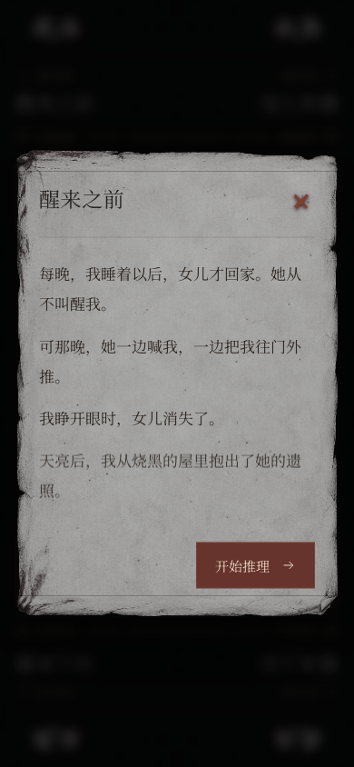
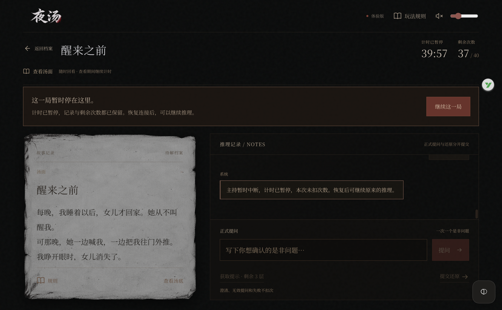

2026-10-27 · 本机开发修正 V0.9.2先保住现场，再恢复推理
代码修正、离线流程和8个定向真实场景复验已完成。
已用真实百炼验证当前消息分流、实际与假设、三种还原结果、自然求助与提示请求。首轮误分已保留并修正；原局仍暂停，等待玩家主动继续。
原试玩保留
30次游戏机会 · 27分07秒
错误答复更正后返还1次；三个已领提示及原28条记录保留。
原批准额度继续使用
66次模型调用可用 · 累计上限¥5
离线修正调用0次；真实复验共12次，累计估算¥0.1582648，低于既定16次复验计划和¥5累计上限。
本次修正
- 新局自动逐行展示完整汤面，读完并点击开始推理后计时；刷新或关闭阅读窗不偷跑计时。
- 自然对局求助独立分流；典型求助本地回应、不扣游戏次数；请求新提示仍受三层限制。
- 未完整和核心冲突分别反馈；只引用已公开问答或已领取提示，不公开缺失节点和未领取线索。
- 已知用量的单条格式错误只影响本次；连接、未知用量或内容缺口暂停现场，计时冻结、刷新保留、恢复不重放。
- 明确未受理的503释放待提交状态；未知传输先核对请求号并取消迟到请求，防止重复扣费。
- 保留第一个停止原因；临时密钥到期覆盖处理中的游戏，停止后不再自动走时。
- S03频率设定与汤面统一，旧错误回答公开更正并返还一次游戏机会。
为什么之前会卡住
“哪里尚未还原完整”没有作为正常求助处理，范围识别的非法组合又使整轮停机。随后503被当成未知提交保留，下一条问题因此无法发送。程序没有冻结中断后的现场，导致时间继续减少。现在分别处理求助、单次错误、整局暂停和请求受理状态。
验证到哪一步
88项Python检查、11项客户端检查通过；静音走查逐行汤面、主动开始、求助、单条失败后继续、暂停后刷新与恢复，以及手机和横屏布局。另补了“请求处理过程中密钥到期”的冻结检查。
百炼真实复验共8个定向场景通过，涉及频率、实际与假设、未完整／完整／冲突以及自然求助。复验使用独立适配器，不修改玩家对话。最初历史意图误分的1次调用也计入本轮12次，没有隐去失败记录。原局保持暂停，不提前消耗游戏时间，也不重发失败问题。
另外修正了第一人称资料中遗留的主语错误。仍需继续观察自然试玩：部分还原的内部节点标注不够准确，本次仅验收动作、答案和公开线索反馈，不把它当成准确进度指标，也不宣称全部问法已经稳定。
真实复验明细 · 首轮失败记录

手机首次阅读汤面
中断时保留现场与继续入口完整修正与验收记录 · Python检查 · 客户端检查
尚未部署、开放内测或同步远端。V1.0继续保留给第一次对外邀请内测。